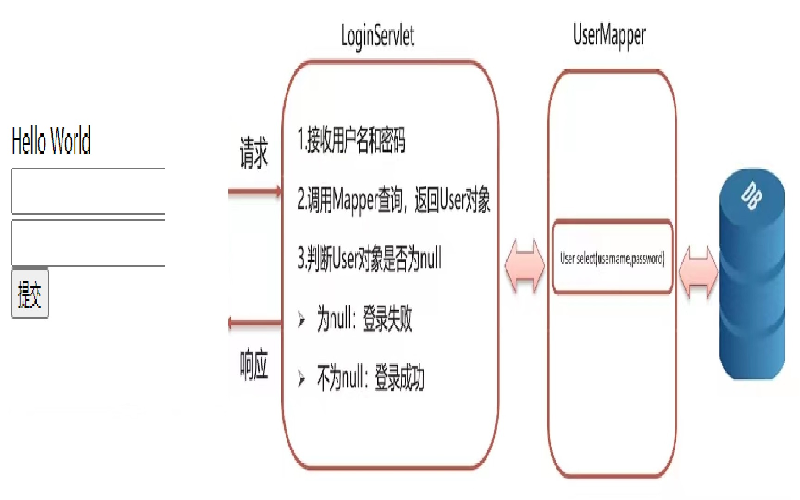
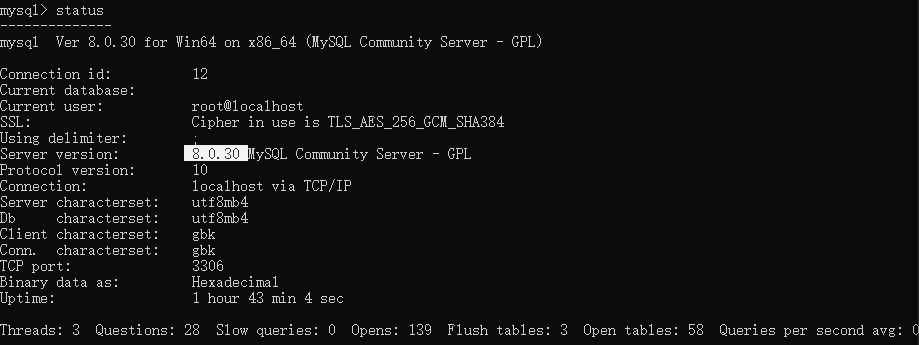

用户登录
流程：
- 用户填写用户名和密码，提交到LoginServlet
- 在LoginServlet中使用MyBtis查询数据库，验证用户名密码是否正确
- 如果正确，响应登陆成功，错误则登陆失败

mybatis-config.xml:
1
2
3
4
5
6
7
8
9
10
11
12
13
14
15
16
17
18
19
20
21
22
23
24
25
26
| <?xml version="1.0" encoding="UTF-8" ?>
<!DOCTYPE configuration
PUBLIC "-//mybatis.org//DTD Config 3.0//EN"
"http://mybatis.org/dtd/mybatis-3-config.dtd">
<configuration>
<!--起别名-->
<typeAliases>
<package name="com.spernxl.pojo"/>
</typeAliases>
<environments default="development">
<environment id="development">
<transactionManager type="JDBC"></transactionManager>
<dataSource type="POOLED">
<property name="driver" value="${jdbc.driver}"></property>
<property name="url" value="${jdbc.password}"></property>
<property name="username" value="${jdbc.password}"></property>
<property name="password" value="${jdbc.password}"></property>
</dataSource>
</environment>
</environments>
<!--加载映射文件-->
<mappers>
<package name="com.spernxl.mapper"/>
</mappers>
</configuration>
|
LoginSerlet：
1
2
3
4
5
6
7
8
9
10
11
12
13
14
15
16
17
18
19
20
21
22
23
24
25
26
27
28
29
30
31
32
33
34
35
36
37
38
| @WebServlet("/loginServlet")
public class LoginServlet extends HttpServlet {
@Override
protected void doGet(HttpServletRequest req, HttpServletResponse resp) throws ServletException, IOException {
String username=req.getParameter("username");
String password=req.getParameter("password");
String resource = "mybatis-config.xml";
InputStream inputStream = Resources.getResourceAsStream(resource);
SqlSessionFactory sqlSessionFactory = new SqlSessionFactoryBuilder().build(inputStream);
SqlSession sqlSession = sqlSessionFactory.openSession();
UserMapper userMapper = sqlSession.getMapper(UserMapper.class);
User user = userMapper.select(username, password);
sqlSession.close();
resp.setContentType("text/html;charset=utf-8");
PrintWriter writer = resp.getWriter();
if(user!=null){
writer.write("登陆成功");
}else {
writer.write("登录失败");
}
}
@Override
protected void doPost(HttpServletRequest req, HttpServletResponse resp) throws ServletException, IOException {
this.doGet(req,resp);
}
}
|
userMapper接口:
1
2
3
4
5
6
7
8
9
10
11
12
13
14
15
16
17
18
| package com.itheima.mapper;
import com.itheima.pojo.User;
import org.apache.ibatis.annotations.Param;
import org.apache.ibatis.annotations.Select;
public interface UserMapper {
@Select("select * from tb_user where username = #{username} and password = #{password}")
User select(@Param("username") String username,@Param("password") String password);
}
|
踩坑记录：
原因：版本错误，查询mysql版本如下
- 登录mysql：
mysql -u root -p输入密码登录
- 输入status查询版本
在maven中导入相应版本的mysql
1
2
3
4
5
| <dependency>
<groupId>mysql</groupId>
<artifactId>mysql-connector-java</artifactId>
<version>8.0.30</version>
</dependency>
|
Author:
Arno Dorian
Permalink:
http://example.com/2022/11/09/%E7%99%BB%E5%BD%95%E9%A1%B5%E9%9D%A2%E6%80%BB%E7%BB%93/
License:
Copyright (c) 2019 CC-BY-NC-4.0 LICENSE
Slogan:
Do you believe in DESTINY?